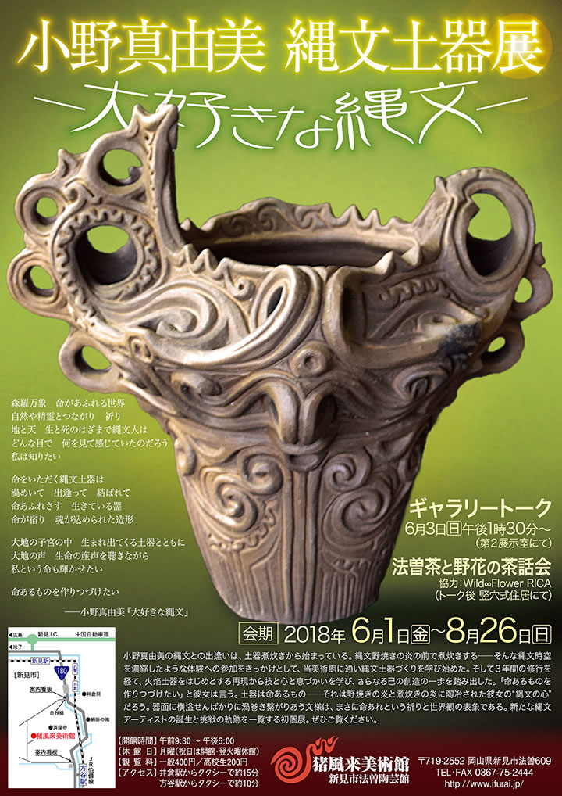

|  |
| 【小野真由美 縄文土器展チラシ】 →PDF版を開く |
森羅万象 命があふれる世界
自然や精霊とつながり 祈り
地と天 生と死のはざまで縄文人は
どんな目で 何を見て感じていたのだろう
私は知りたい
命をいただく縄文土器は
渦めいて 出逢って 結ばれて
命あふれさす 生きている噐
命が宿り 魂が込められた造形
大地の子宮の中 生まれ出てくる土器とともに
大地の声 生命の産声を聴きながら
私という命も輝かせたい
命あるものを作りつづけたい
――小野真由美『大好きな縄文』
=∴=∵=∴=∵=∴=∵=∴=∵=∴=∵=∴=∵=∴=∵=∴=∵=∴=∵=∴=∵=∴=∵=∴=∵=∴=∵=∴=
小野真由美の縄文との出逢いは、土器煮炊きから始まっている。
縄文野焼きの炎の前で煮炊きする――そんな縄文時空を濃縮したような体験への参加をきっかけとして、当美術館に通い縄文土器づくりを学び始めた。
そして３年間の修行を経て、火焔土器をはじめとする再現から技と心と息づかいを学び、さらなる己の創造の一歩を踏み出した。
「命あるものを作りつづけたい」と彼女は言う。
土器は命あるもの――それは野焼きの炎と煮炊きの炎に陶冶された彼女の“縄文の心”だろう。
器面に横溢せんばかりに渦巻き繋がりあう文様は、まさに命あれという祈りと世界観の表象である。
新たな縄文アーティストの誕生と挑戦の軌跡を一覧する初個展。
ぜひご覧ください。